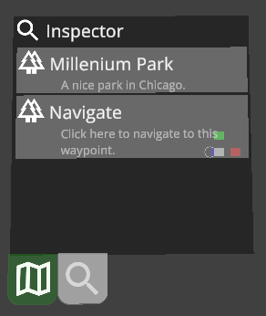

|
FirstModulAR 0.1.0
|
|
FirstModulAR 0.1.0
|

The inspector widget provides a generic "inspector" that can be used to "inspect" things. For example, if a user clicks on a Point of Interest on the map, it could be used to show that Point of Interest's metadata, or if a user clicks on a squadmate's name in a list, it might show additional data about that squadmate.
In concept, this was imagined as a "universal" inspector, in the spirit of modularity. We wanted to leave the option open for developers to make customized inspector UIs for specific data types (e.g. a designated Point of Interest inspector to inspect Points of Interest), but in the event that scenario developers didn't want to add a ton of extra custom packages, this "universal" inspector can inspect any object or data type that implements the IInspectable interface.
Objects that inherit from the IInspectable interface must provide a list of Inspector "widgets", small rows that contain discrete chunks of information. Each widget also provides an icon associated with it, and an optional link to be triggered if the widget is clicked. Apologies for the naming redundancy with these "widgets", since the term widget is also used to refer to a higher-level type of object.
Reference the How to setup a widget section in the readme of the Widgets package.